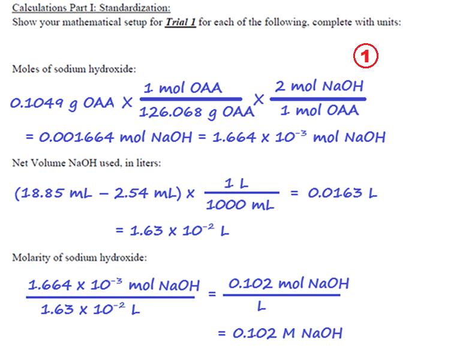
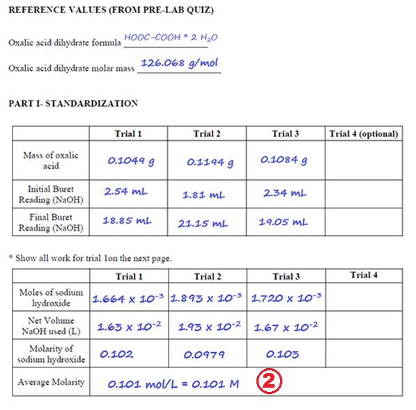
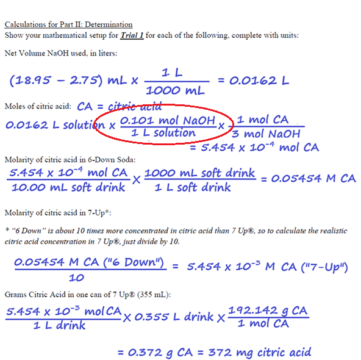
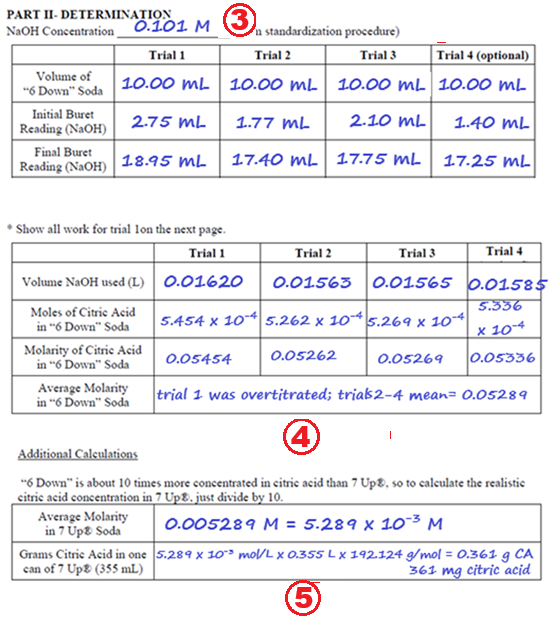

Read about titration technique. It tells you how to rinse (and clean, if necessary) the buret in preparation for doing titration. It also explains titration, with written notes and with a couple of videos.
The report to be submitted by students can be complicated with the two parts. Make sure to be entering your data and calculations while you are in the lab when proceeding through the two parts. Terms:
Part I is for you to determine the exact concentration of the NaOH reagent that you will use then to determine, in Part II, the exact concentration of citric acid in a soft drink, which is the ultimate goal of the experiment.
Understand what you are doing in Part I. The supply list says "NaOH (˜0.1 M)" will be used (image below). That means when you determine what the concentration is, it should be close to 0.1 M.



Some of you wrote in the value "0.101 M" which was the value of the Example Data Analysis. That is not your value. Your value is the concentration of NaOH that you determined, indicated in molar (M).


Another thing noticed is that some of you wrote "trial 1 was overtitrated". If you did in fact overtitrate Trial #1, then what means you will exclude it from calculating the average for the molarity of the soft drink ("6 Down" soda). But if Trial 1 as okay for you, do not write that in. The average value (#4 in the image below) was computed using the data from Trials #2 through #4.
Finally some of you may not be aware how to calculate the Average Molarity of 7-Up® and the "Grams Citric Acid in one can". The average molarity of 7-Up® is just found by dividing the 6-Down molarity by 10. That's it. For the Grams 7-Up® in one can:
\( \textbf{average molarity (mol/L)} \times \textbf{volume of can (L)} \times \textbf{citric acid molar mass (g/mol)} \) \[ \frac{5.289 \times 10^{-3} \cancel{\text{ mol citric acid}}}{1 \cancel{\text{ L soft drink}}} \times \frac{0.355 \cancel{\text{ L soft drink}}}{1} \times \frac{192.124 \text{ g citric acid}}{1 \cancel{\text{ mol citric acid}}} \] \[ = 0.361 \text{ g citric acid} \]
See #5 in the image.
